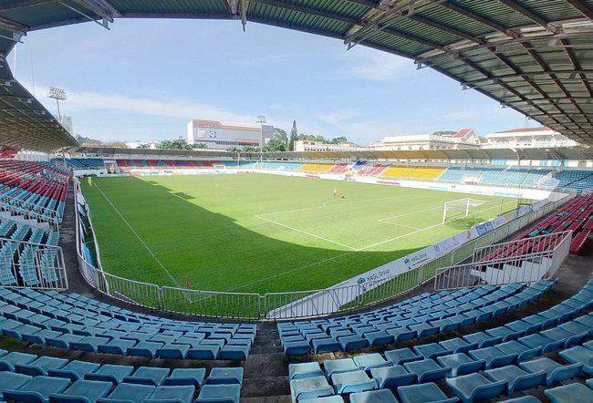

Mak
MMak — основатель и редактор Bang Sport Daily. Живёт в Пномпене (Камбоджа), много лет следит за мировым спортом и проверяет каждый материал перед публикацией.

Александр Волков подписал новый контракт с UFC, начались переговоры о титульном бое
38-летний российский тяжеловес заключил соглашение на несколько боёв через месяц после победы над Ризваном Куниевым на UFC 333 в Абу-Даби, сообщил его менеджер.

Винисиус оформил хет-трик за 12 минут, Бразилия разгромила Сингапур 7:0
Винисиус Жуниор забил на 9-й, 15-й и 21-й минутах и сделал первый хет-трик за сборную, ещё по голу на Национальном стадионе провели Эндрик, Эстевао и Райан.

Камбоджийская премьер-лига: клубы сильнее, трибуны пусты. Как растить болельщиков — разбор по каждому клубу
Камбоджийские клубы побеждают в Азии, но в среднем на матч лиги приходит около 1300 зрителей. Данные по всем 11 клубам, подъём «Ангкор Тайгер» в Сиемреапе и опыт Японии и Таиланда показывают, что может сделать каждый клуб.

Линь Дань: как «Супер Дэн» выиграл все главные титулы в бадминтоне
На своей первой Олимпиаде он проиграл в первом круге, а затем выиграл золото в Пекине и Лондоне, пять чемпионатов мира и все девять главных турниров.

Стивен Томпсон завершил карьеру нокаутом с разворота на UFC 334
43-летний «Вандербой» закончил 16-летнюю карьеру в ММА, остановив Чарльза Радтке в третьем раунде в «Мэдисон-сквер-гарден». Дана Уайт сказал, что UFC проверит его в роли комментатора.

Игнатова (Трусова) взяла второе серебро Гран-при и приблизилась к финалу в Китае
Серебряный призёр Олимпиады-2022 стала второй на Skate America через неделю после второго места на Кубке Китая и идёт второй в общем зачёте, когда до конца серии остаются два этапа.

«Ляонин» впервые выиграл женскую Суперлигу Китая за тур до конца
Ничья 1:1 с «Пекином» дома в Шэньяне принесла титул — через год после того, как «Ляонин» упустил его в последнем туре в матче с тем же соперником.

Англия вдесятером обыграла Испанию 3:2 в Мадриде и заняла первое место в группе Лиги наций
Кейн, Конса и Уайт забили до удаления Эллиота Андерсона, и англичане удержали победу, прервав 43-матчевую беспроигрышную серию Испании.

В этот день в 2005 году: Австралия прервала 31-летнее ожидание и вышла на чемпионат мира
«Соккеруз» в драматичной серии пенальти одолели сборную Уругвая на « Stadium Australia» и завоевали путевку на ЧМ-2006.

Китай выиграл четыре золота на этапе Кубка мира по конькобежному спорту в Пекине
Нин Чжунъянь победил на 1000 м с рекордом катка и на 1500 м, а Лянь Цзывэнь и Гао Тинъюй выиграли по одному забегу на 500 м на «Ледяной ленте».

Эх Пхутонг: боец из Кохконга, ставший лицом кун-кхмера
Чемпион страны в нескольких весовых категориях, он побеждал иностранных соперников в Пномпене, бесплатно учил уличных детей и теперь тренирует новых чемпионов Камбоджи.

Ма Лун: от вундеркинда из Аньшаня до шести олимпийских золотых медалей
Его не включили в одиночный разряд сборной Китая на Играх-2012 в Лондоне, а затем он дважды подряд выиграл олимпийский одиночный турнир и три чемпионата мира подряд.

Япония обыграла Бразилию 3:2 в Сингапуре, забив победный гол в добавленное время
Тацухиро Сакамото забил на 91-й минуте после того, как дубль Винисиуса Жуниора позволил Бразилии сравнять счёт; Карло Анчелотти и Рафинья были удалены.

UFC 334: Ган нанёс Хокиту первое поражение, Харрисон заставила сдаться Нуньес
Оба чемпиона сохранили титулы в «Мэдисон Сквер Гарден»: Сирил Ган — с тремя судейскими записками 48:47, Кайла Харрисон — удушающим приёмом сзади в четвёртом раунде.

Вьетнам U23 сыграл вничью с Катаром и без поражений выиграл Gia Lai VTV Cup
Нгуен Минь Там сравнял счёт сразу после перерыва в Плейку и принёс хозяевам очко, которого хватило для титула.

Индия U17 разгромила Гуам 12:0 и возглавила группу в отборе Кубка Азии
Капитан Даллалмуон Гангте сделал хет-трик в первом тайме в Куала-Лумпуре; дальше Индию ждёт Палестина, у которой тоже шесть очков.

В этот день в 2010 году: Себастьян Феттель завоевал первый титул в Формуле-1 и стал самым молодымчемпионом
Немецкая звезда Red Bull Racing оформила чемпионство на Гран-при Абу-Даби, положив начало четырехлетней эре доминирования команды.

Семинар по кун-кхмеру в Чили собрал 65 человек, федерация идёт дальше по Южной Америке
После трёхдневной программы в Сантьяго Международная федерация кун-кхмера планирует тренинги в Бразилии, Аргентине, Уругвае, Парагвае и Боливии.

«Манчестер Юнайтед» назначил Маурисио Почеттино после увольнения Майкла Каррика
Бывший тренер «Тоттенхэма» и «Челси» подписал контракт до 2029 года и приступит к работе 18 ноября, завершив дела в сборной США.

Пегула отыграла матчбол у Носковой и вышла в полуфинал Итогового турнира WTA
Американская ветеранка вырвала победу в драматичном матче, оставила за бортом плей-офф Коко Гауфф и теперь встретится с Миррой Андреевой.

Гол вышедшего на замену Бао Лонга принёс Вьетнаму U23 победу над Сингапуром — до титула на VTV Cup один шаг
Вьетнам выиграл 1:0 в Плейку, одержал вторую победу подряд и в субботу может стать чемпионом, сыграв вничью с Катаром.

Безголевая серия Овечкина достигла 12 матчей — «Нью-Джерси» обыграл «Вашингтон» 5:2
В объявленном прощальном сезоне лучший снайпер в истории НХЛ забил один гол в 17 матчах — это близко к самой длинной безголевой серии в его карьере.

Дубль Пио Эспозито помог Италии обыграть Францию 3:1 — первое поражение Зидана
Италия отыгралась на «Сан-Сиро» и по личным встречам возглавила группу A1 Лиги наций за тур до конца группового этапа.

«Кристал Пэлас» уволил Пьера Сажа после 16 матчей
Команда замыкает турнирную таблицу АПЛ, а руководство клуба ведет переговоры с Томасом Франком.

Андреева выиграла 11 геймов подряд, обыграла Соболенко и вышла в полуфинал Итогового турнира WTA
19-летняя теннисистка победила 6:4, 6:0 в Индиан-Уэллсе и заняла первое место в группе 2 на своём дебютном Итоговом турнире — впервые с 2016 года, когда это удалось Светлане Кузнецовой, россиянка вышла из группы.

Хет-трик Гангте принёс сборной Индии U17 волевую победу над Сингапуром — 4:2
Капитан забил три мяча в Куала-Лумпуре, и Индия отыгралась в стартовом матче группы E отбора на Кубок Азии U17 2027 года.

Александр Головин и Наиль Умяров пропускают ноябрьский сбор сборной России
Главный тренер Валерий Карпин подтвердил кадровые проблемы: национальная команда готовится к товарищеским матчам в Ташкенте.

Гамбит на 500 долларов: как Падж Хеффelfinger стал первым профессиональным игроком в американский футбол
12 ноября 1892 года тайная сделка в Пенсильвании навсегда изменила ландшафт американского спорта.

Дубль Фудзино вдохновил «Манчестер Сити» на волевой разгром в Монце и первую победу в Лиге чемпионов
Команда Андре Йеглерца пропустила первой, но забила четыре мяча «Интеру», дав передышку лидерам перед суперматчем чемпионата.

«Манчестер Юнайтед» переманивает Маурисио Почеттино на фоне неизбежного увольнения Майкла Каррика
Боссы манкунианцев настаивают на смене главного тренера: команда опустилась на 18-е место в АПЛ.